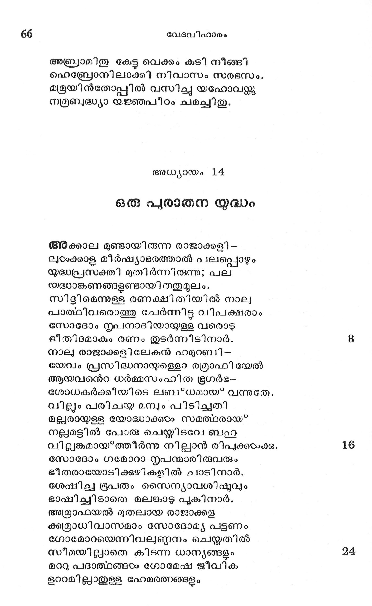
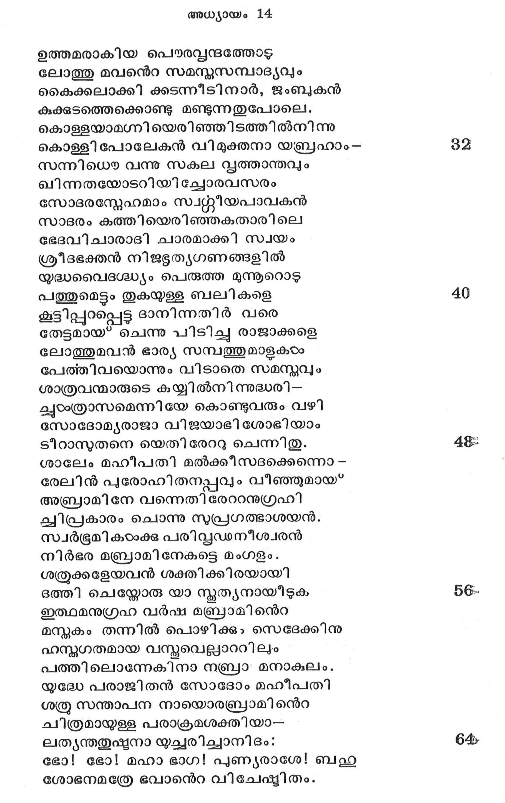
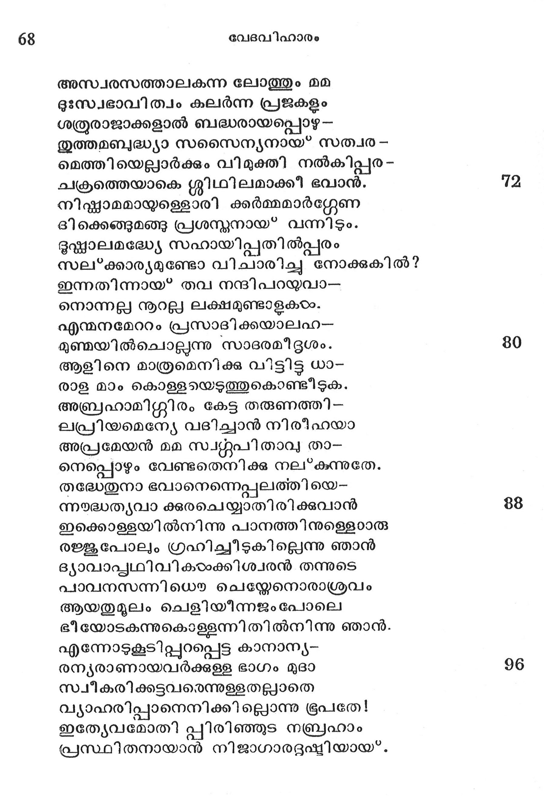

ഒരു പുരാതന യുദ്ധം
അക്കാല മുണ്ടായിരുന്ന രാജാക്കളി --
ലുരംക്കാള മീര്ഷ്യാഭരത്താൽ പലപ്പൊഴും
യുദ്ധപ്രസക്തി മുതിര്ന്നിരുന്നു; പല
യദ്ധാങ്കണങ്ങളണ്ടായി തതുമൂലം.
സിദ്ദിമെന്നുള്ള രണക്ഷിതിയില് നാലു
പാത്ഥിവരൊത്തു ചേര്ന്നിട്ട വിപക്ഷരാം
സോദോം ന്റപനാദിയായള്ള വരൊടു
ഭീതിദമാകും രണം തുടര്ന്നീടിനാര്.
നാല രാജാക്കളി ലേകന് ഹമുറബി -
യേവം പ്രസിദ്ധനായള്ളൊ ര്രമാഫിയേല്
ആയവനെറ ധര്മ്മസംഹിത ഭൂഗര്ഭ--
ശോധകര്ക്കീയിടെ ലബ*ധമായ* വന്നുതേ.
വില്ലം പരിചയ മമ്പും പിടിച്ചതി
മല്പരായളള യോദ്ധാക്കഠം സമത്ഥരായ*
നല്ലമട്ടില് പോരു ചെയ്യിടവേ ബഹ
വില്പങ്കമായ*ത്തീര്ന്നു നില്പാന് രിപക്കഠാക്കു.
സോദോം ഗമോറാ ന്ൃപന്മാരിരുവരും
ഭീതരായോടിക്കുഴികളില് ചാടിനാര്.
ശേഷിച്ച ഭ്ൂപരും സൈന്യാവശി ഷവും
ഭാഷിച്ചി ടാതെ മലങ്കാട് പുകിനാര്.
അആര്രാഫയല് മുതലായ രാജാക്കള
കു്രമാധിവാസമാം സോദോമ്യ പട്ടണം
ഗോമോറയെന്നിവല്ണ്ണനം ചെയ്തതില്
സീമയില്ലാതെ കിടന്ന ധാന്യങ്ങളും
മററു പദാത്ഥങ്ങടഠം ഗോമേഷ ജീവിക
ളററമില്ലാതുള്ള ഹേമരത്നങ്ങളം

ഉത്തമരാകിയ പെൌരവ്വന്ദത്തോട*
ലോത്തു മവനന്െറ സമന്നസമ്പാദ്യവും
കൈക്കലാക്കി ക്കടന്നീടി നാർ, ജംബുകന്
കുക്കുടത്തെക്കൊണ്ടു മണ്ടുന്നതുപോലെ.
കൊള്ളയാമഗ്നി യെരിഞ്ഞിടത്തില്നിന്നു
കൊള്ളി പോലേകന് വിമുക്തനാ യബ്രഹാം- രക
സന്നിധൌ വന്നു സകല സ്ൃത്താന്തവും
ഖിന്നതയോടറിയിച്ചോരവസരം
സോദരന്റേഹമാം സ്വന്റ്റീയപാവകന്
സാദരം കത്തിയെരിഞ്ഞകതാരിലെ
ഭേദവിചാരാദി ചാരമാക്കി സ്വയം
ശ്രീദഭക്തന് നിജഭൂത്യഗണങ്ങളില്
യൃദ്ധവൈദഗശ്ധ്യം പെരുത്ത മുന്നൂറൊടു
പത്തുമെട്ടം തുകയ്ള്ള ബലികളെ 40
കൂട്ടിപ്പറപ്പെടു ദാനിന്നതിര് വരെ
തേട്ടമായ* ചെന്നു പിടിച്ചു രാജാക്കളെ
ലോത്തുമവന് ഭാര്യ സമ്പത്തുമാളക്ഠം
പേത്തിവയൊന്നും വിടാതെ സമസ്തവും
ശാത്രവന്മാരുടെ കയ്യില്നിന്നുദ്ധരി-
ചുഠംത്രാസമെന്നിയേ കൊണ്ടുവരും വഴി
സോദോമൃരാജാ വിജയാഭി ശോഭിയാം
ടീറാസുതനെ യെതി രേററു ചെന്നിതു. 28
ശാലേം മഹീപതി മല്ക്കീസദക്കെന്നൊ -
രേലിന് പുരോഹിതനപ്പവു ൦ വീഞ്ഞുമായ*
അബ്രാമിനേ വന്നെതിരേററനുഗ്രഹി
ചി പ്രകാരം ചൊന്നു സുപ്രഗത്ഭാശയന്.
സ്വര്ഭൂമി കയംക്കു പരിവ്വഡനീശ്വരന്
നിര്ഭര മബ്രാമി നേകട്ടെ മംഗളം.
ശര്രുക്കളേയവന് ശക്തിക്കിരയായി
ദത്തി ചെയ്യോരു യാ സ്കൃത്യനായീടുക 5൫.
ഇത്ഥമനുഗ്രഹ വര്ഷ മബ്രാമി ന്െറ
മസ്തകം തന്നില് പൊഴിക്കും സെടദേക്കിനു
ഹസ്മഗതമായ വസ്തവെല്ലാററിലും
പത്തിലൊന്നേകിനാ നബ്രാ മനാകുലം.
യുദ്ധേ പരാജിതന് സോദോം മഹീപതി
ശത്രു സന്താപന നായൊരബ്രാമി ന്െറ
ചിത്രമായ്ള്ള പരാക്രമശക്തിയാ-
ലത്യന്തതുഷ്ടനാ യ്ച്ചരിച്ചാനിദം: 6൭
ഭോ! ഭോ! മഹാ ഭാഗ! പുണ്യരാശേ! ബഹു
ശോഭനമത്രേ ഭവാന്െറ വിചേഷ്യിതം.

അസ്വരസത്താലകന്ന ലോത്തും മമ
ദുഃസവഭാവിത്വം കലര്ന്ന പ്രജകളം
ശര്രുരാജാക്കളാല് ബദ്ധരായപ്പൊഴ --
തുത്തമബദ്ധ്യാ സസൈന്യനായ* സത്വര -
മെത്തിയെല്ലാര്ക്കും വിമുക്തി നല്കിപ്പുര -
ചക്രത്തെയാകെ ശ്ലീഥി ലമാക്കീ ഭവാന്.
നിഷ്കകാമമായ്ള്ളൊരി ഒത്ത
ദിക്കെങ്ങുമങ്ങു പ്രശസ്നനായ*' വന്നിടും.
ഭൂഷ്ണാലമദ്ധേയ സഹായിപ്പതില്പ്പരം
സലക*ക്കാര്യമുണ്ടോ വിചാരിച്ചു നോക്കുകില് ?
ഇന്നതിന്നായ* തവ നന്ദിപറയുവാ-
നൊന്നല്ല നൂറല്ല ലക്ഷമുണ്ടാളകയം.
എന്മനമേററം പ്രസാദിക്കയാലഹ-൦
മുഞ്ജയില്ചൊപല്ലുന്നു സാദരമീദൂശം.
ആളിനെ മാത്രമെനിക്കു വിട്ടിട്ട ധാ-
രാള മാം കൊള്ളയെടുത്തുകൊണ്ടിടുക.
അബ്രഹാമിഗ്ശിരം കേട്ട തരുണത്തി-
ലപ്രിയമെന്യേ വദിച്ചാന് നിരീഹയാ
അപ്രമേയന് മമ സ്വ്്തശപി താവ താ൦
നെപ്പൊഴും വേണ്ടതെനിക്കു നല*കുന്നുതേ.
തഭ്ധേതുനാ ഭവാനെന്നെപ്പലത്തി യെ-
ന്നദ്ധത്യവാ ക്കുരചെയ്യാതിരിക്കുവാന്
ഇക്കൊള്ളയില്നിന്നു പാനത്തിനുള്ളൊരു
രജ്ജുുപോലും ഗ്രഹിച്ചീടുകില്ലെന്നു ഞാന്
ദ്യാവാപ്പഥിവിക്ഠംക്കിശ്വരന് തന്നുടെ
പാവനസന്നിധൌ ചെയ്യേനൊരാശ്രവം
ആയതുമുൂലം ചെളിയീന്നജംപോലെ
ഭീയോടകുന്നുകൊള്ളന്നിതില്നിന്നു ഞാന്.
എന്നോടുകൂടിപ്പുറപ്പെട്ട കാനാന്യ-
രന്യരാണായവര്ക്കുള്ള ഭാഗം മുദാ
സ്വീകരിക്കട്ടവരെന്നുള്ളതല്ാതെ
വ്യാഹരിപ്പാനെനിക്കില്ലൊന്നു ഭൂപതേ!
ഇതേ്യേവമോതി പ്പിരിഞ്ഞുട നബ്രഹാം
പ്രസ്ഥിതനായാനു നിജാഗാരദൃഷ്മഷിയായ്.
